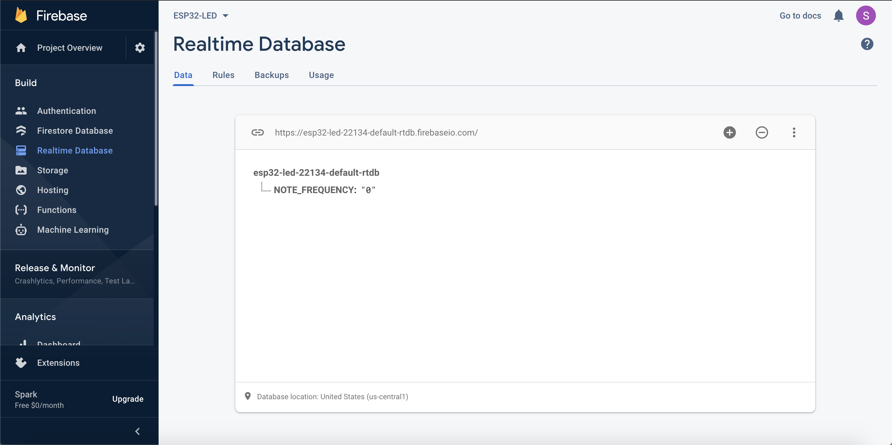

For the first part of this assignment, I decided to make a "choose your tone" circuit which would be controlled by an html page. At first, I had thought of making an alarm since I wanted to play around with input boxes and buttons, but I then remembered a Michelle had already done this and it would be kind of similar. I decided on using the piezo buzzer since it only needs a frequency in order to play a tone and there are infinite numbers so it would basically rely on the person picking his or her tone. Throughout the creation of this circuit, I learned to use Google Firebase that would serve as a communication link between Arduino IDE and the html page that I made. I also learned to create buttons and input boxes for html pages which was very fun to mess around with. In Google Firebase, I learned to play around with the different variables and then accessing the firebase from Arduino IDE in order to get the values that were needed to play the tone. There were lots of little details that I had to fix in order for this tone circuit to work and I even added an LED to signal when there was a tone being played and when there wasn't. The first step in this process was to learn to create a Firebase.


In order to learn how to use a Firebase, I looked at the tutorial in the course website which talked about setting up a firebase as well as the html page, but first I focused on Google Firebase. Since I had never played with the ESP32 or any firebase, everything was new to me. I followed every step, from signing in with my account, to creating a realtime database, getting its link as well as secret key that would later allow me to access this firebase from Arduino IDE. After creating the firebase, it was time to create the html page. This was my first time experimenting with input boxes, and buttons so I used the code from the firebase tutorial to create a simple html page. However, I needed an input box that would take in a number as well as a button to submit that number. I looked at the W3Schools website and learned how to create a simple input box as well as a button. However, I didn't know how to connect these buttons that I had made to the firebase. For this, I used Michelle's documentation about her alarm clock to learn how to use the data that was inputted. I created a function that would basically assign the input number to the NOTE_FREQUENCY variable in the Firebase. I also included a little header before the input box that would tell the user to input the frequency of the tone that they wanted. After setting up the send button and the frequency box, I tested it, and the value that I wrote down was stored in the firebase variable. Finally, I decided to save the html page in this week's folder with a link to it. However, before I tested it with the code, I thought of no frequency and I thought that it would be very silly to type 0 on the input box so I created a second button that would allow the user to play no tone when it was pressed. It would basically make the NOTE_FREQUENCY variable equal to 0. After this button was added, I tested it with the firebase, and eveyrthing worked. Now, I had to create the circuit in real life.
In order to create the circuit in real life, I used the ESP32, a breaboard, the piezo buzzer, an LED, and a resistor. I tried using the long breadboard but the ESP32 wouldn't stick to it so I used a smaller one, but I would be working with a tight space. In order to connect the buzzer, I used Kassia's way of doing it since the piezo would take a lot of room in the breadboard. Throughout the process I used Adafruit's page to see the number of the pins in the back. After figuring out that I would connect the piezo to pin 12, I proceeded to connect ground and power from the ESP32 to the breaboard. After doing this, I connected a green LED to pin 5 which is also called SCK. I used a 100 ohm resistor since I would only be turning on or off the LED depending on the note. After everything was wired, the only thing left was creating the code in Arduino IDE.
The first step was creating a new Arduino IDE file. Then, since I didn't know where to start, I used the example that was to turn off or on an LED. Since I already had the firebase link as well as the secret key, I pasted them in the corresponding spots. Then, I looked at my Wifi and got the name of the network as well as the password to it. The first thing that I did was to get rid of the last delay() function, so I created a previousMillis and offTime variable. After that was done, I changed every /LED_STATUS to /NOTE_FREQUENCY and since I was inputting a number, I decided that I would be calling the variable fireInt instead of String. Then, I created a tone function that would need a frequency that would basically be the fireInt. For debugging purposes, I also made the code print fireInt to the Serial Monitor to know when it was working. After running it for the first time, it didn't work. The frequency got stuck in the firebase but the Serial Monitor only registered 0. I started to look over my code for any errors but there weren't any. I then remembered that the firebase was storing it as a string so I changed fireInt to a string. Then, before playing the tone, I would convert that string to an integer in order to play the tone. After doing these modifications, I ran the code, and it worked. However, when the frequency was 0, the tone kept playing so I added an else if statement to check if the frequency was 0 to stop playing the tone. After all of this was done, I tried it for the last time and it worked.
I did some tests with different frequencies and the 0 frequency button to see if everything worked correctly. After various tests, it did and I now had to move on to the second part of the assignment but these were some of my tests:
For the second part of the assignment, I wanted to play around with the weather API and use the LED Strip to show how hot or cold that place was. I would later on also incorporate a piezo buzzer that would play a certain tone depending on the temperature in that place. After doing the API example that was on the website, I really wanted to play around more with it and understand the system that they used in order to look at the weather in a certain place. Throughout the creation of the Weather Check circuit, I learned to take information from an API and program the ESP32 to do something with it which in this case would be to turn on a certain number of LED's from the strip and play a certain tone. The most difficult part when making this circuit was getting the links to different locations and after trying to look at the weather in different parts of the world, realizing that it was only for the United States but surprisingly, places in Alaska didn't work. Nonetheless, I had a very fun time creating this weather circuit. This circuit only required an Arduino IDE code and the acutal circuit in real life. The first step in creating it was making the actual circuit.
In order to create the circuit in real life, I used the ESP32, a breaboard, an LED strip, a 100 ohm resistor, and a piezo buzzer. The first thing was connecting ground to power and since the only voltage that the ESP32 has is 3 volts, I connected both wires to their respective pin. Then, I wired the LED strip. The black wire of the strip goes to ground, the red one to power, and the yellow one to the pin. However, the yellow wire has to first pass through a resistor and then it can connect to the pin. I connected both power and ground and for the yellow wire, I used the same 100 ohm resistor from before and decided to connect it to pin 15 with the help of the Adafruit page that specifies the number of each pin. Then, the only thing left to connect was the piezo buzzer. For this, since I was also using a small breadboard since the ESP32 wouldn't stick to the large breadboard and I didn't want to damage it, I again used Kassia's way of wiring it since the piezo would take a lot of space in the breadboard and I had very few space remaining. I also connected it to pin 12 on the ESP32. After everything was wired up to the breadboard, the only thing left was creating the Arduino IDE code.

The first step in making the Arduino IDE code was creating a new file. Then, I used the example that we did in class as a base for the code. However, the first thing that I did was getting rid of the last delay() function and change the delay to 10 seconds by using a previousMillis and offTime variable. Then, I changed the serial print part so that it would tell you the current temperature and the forecast. Initially, I was only going to use the link that was given in the example but in order to test different locations, the LED strip, and the piezo buzzer, I had to find new US locations. However, I first made a new class for the LED strip which would basically only need a temperature argument which would come from the link. Since not all temperature are divisible by 10, I decided to create a variable that would basically take the actual temperature and divide it by 10 to get a whole number result. Then, using this reuslt, it would light up those LED's using a for() loop. After that loop was done, I decided to make the LED's different colors depending on the temperature so a temperature between 0 - 50 farenheit would be blue since it is cold temperatures, from 50 to 80 would be green since it is kind of normal, and above 80 would be red to signal that it is hot. Then, the next step was creating the tone function for the piezo buzzer that would take a frequency that depending on the temperature, would be different. After creating each frequency for a specific range of temperatures, I added the class to the loop() function where it would update and play the tone. After that was done, I tested it with the location that was already given and it worked! Now, I only needed to add more locations. However, since I didn't understand how they got the coordinates, I went to a help session were Nathan showed me the API's website and how you could find other locations. This is were I realized that I could only use locations in the United States so I used the Internet to find very cold and very hot locations to test each range. The weather API website gave me some examples which I did with my own coordinates. First, I would go to Google Maps and find the coordinates for that locaiton. I would create a link were it would give me the office, gridX, and gridY numbers that I would later input to get a similar link to the one that was used in the example. For a very cold location, I was planning on using Alaska but I kept getting an error that said that the location wasn't accepted which I found very weird, so in the end the locations that I used are the Harvard Engineering School, San Francisco, California, Chandler, Arizona, and Rim Rock Colony, Montana. After I got all these links, I tested the code and each one worked, turning on different LED's, different colors, and different piezo tones.
In the end, I really liked messing around with the weather API and will maybe in the future look at different API's that can tell me the weather in different locations around the world. These are some of my testings that I did with two of the locations and their results: